27.1. OpENer Blinky
27.1.1. 概述
OpENer Blinky示例用于演示使用OpENer通过Ethernet/IP(EIP)协议实现远程IO的功能。
27.1.2. 准备
27.1.2.1. 硬件
带Ethernet的开发板，请参考具体开发板 引脚描述 查看Ethernet硬件
==根据开发板的硬件配置，在CMakeLists.txt中选择相应的RMII/RGMII，和phy芯片。==
带网口的PC
TwinCAT3软件对PC网卡有适配问题, 部分支持的Intel网卡
27.1.2.2. 软件
TwinCAT3.1(Build 4024.56)
27.1.3. TwinCAT工程设置
27.1.3.1. 创建工程
打开TwinCAT软件，选择 File->New->Project
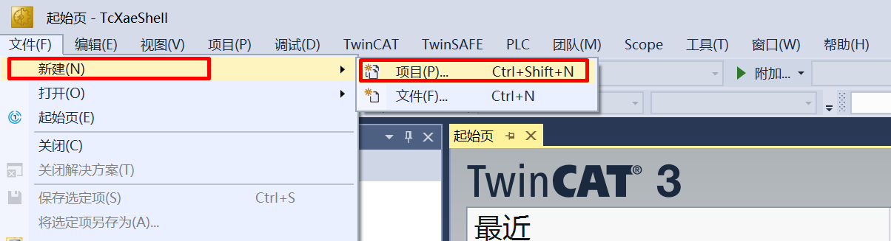
选择 TwinCAT Project , 命名后点击 OK

27.1.3.2. 软件配置
更新网卡驱动(第一次使用时需要)
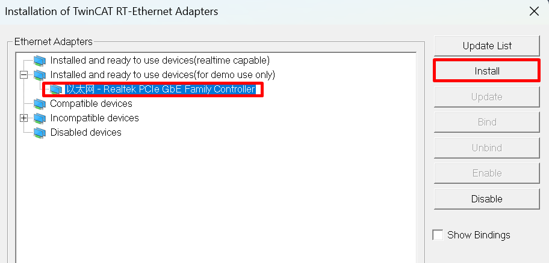
时钟设置
- 软件运行时可能遇到如下报错： 需要以管理员权限运行C：TwinCAT3.1Systemwin8settick.bat
Init4RTime：Start Interrupt：Ticker started >> AdsWarning4115 （0x1013,RTIME：system clock setup failed） - - -
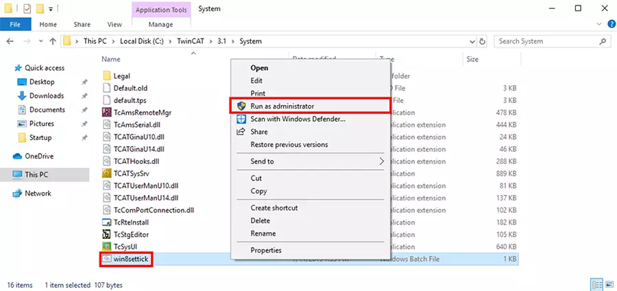
27.1.3.3. 添加EIP Scaner
点击Device, 右键添加新项
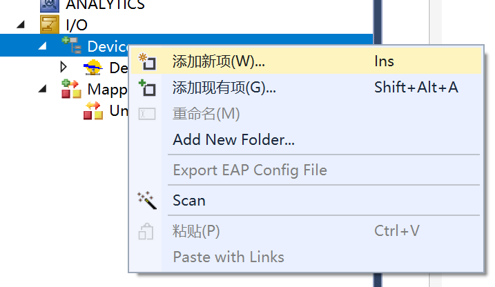
选择EIP Scaner
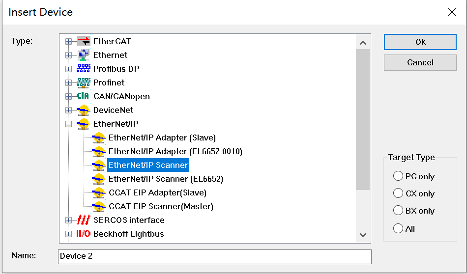
选择前边更新驱动后的网卡
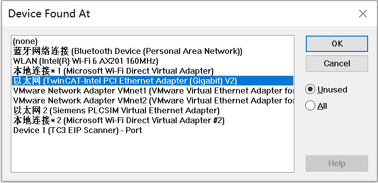
配置ip地址
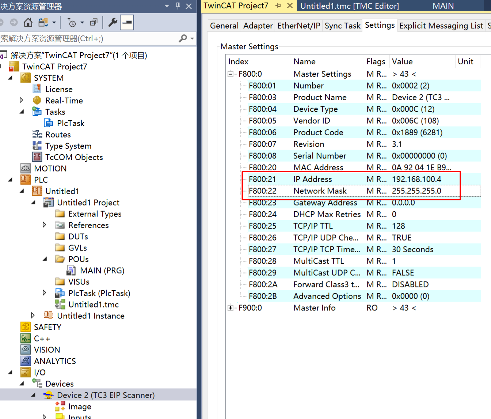
重新进入配置模式，使上一步的ip配置生效
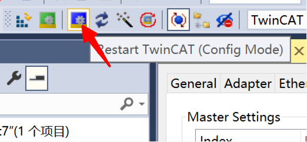
27.1.3.4. 添加EDS文件
右键EIP Scaner，选择import EDS file，选择opener/opener_blinky_app.eds
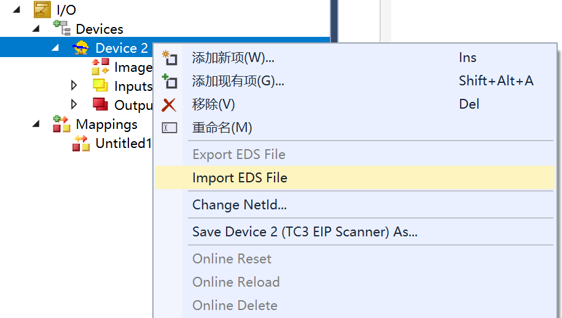
27.1.3.5. 扫描设备
右键EIP Scaner, 然后扫描
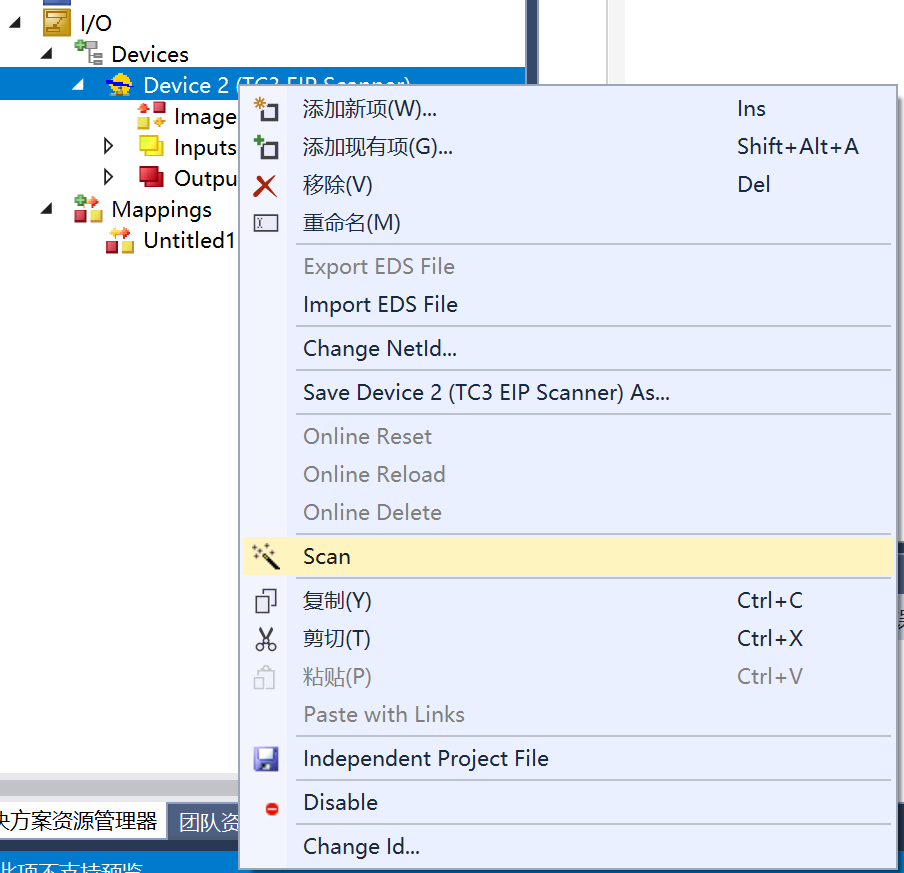
添加设备
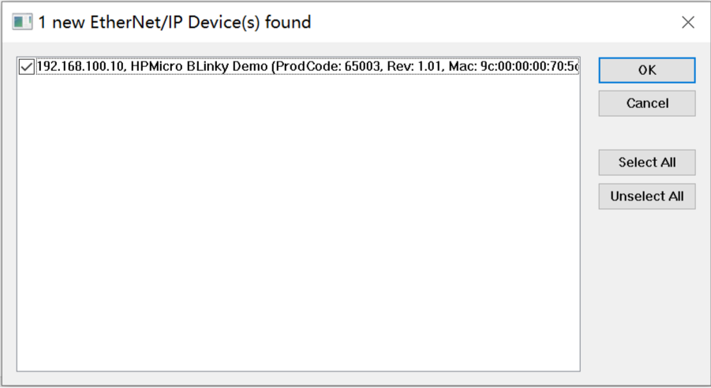
27.1.3.6. 添加IO链接
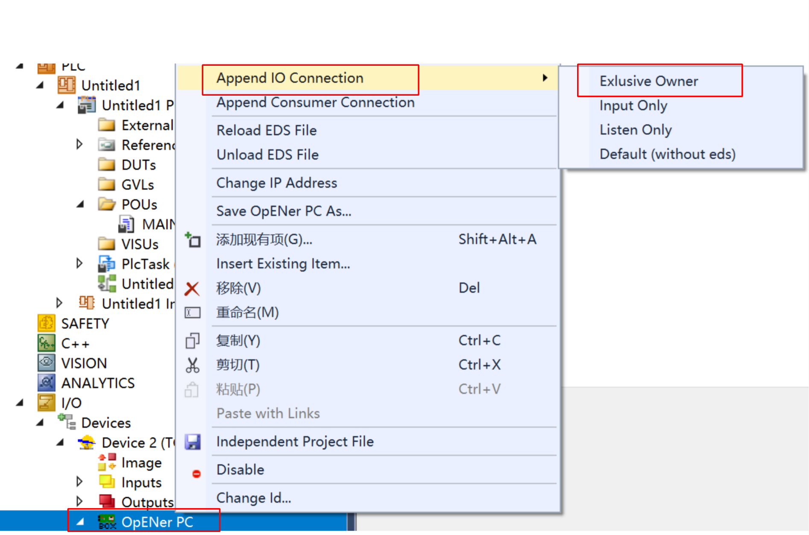如果此时列表中没有找到Exclusive Owner，那么可以手动指定一下eds文件。
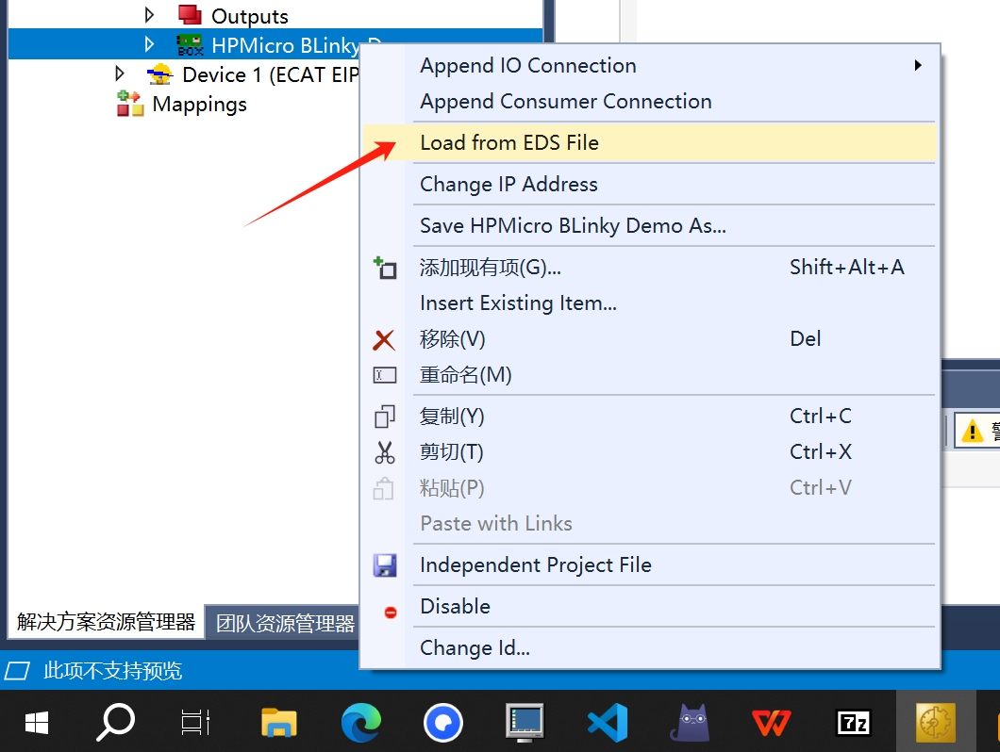
27.1.3.7. IO操作
输入IO, 按动评估板上的按键KEYA, Input/Key State数值发生变化
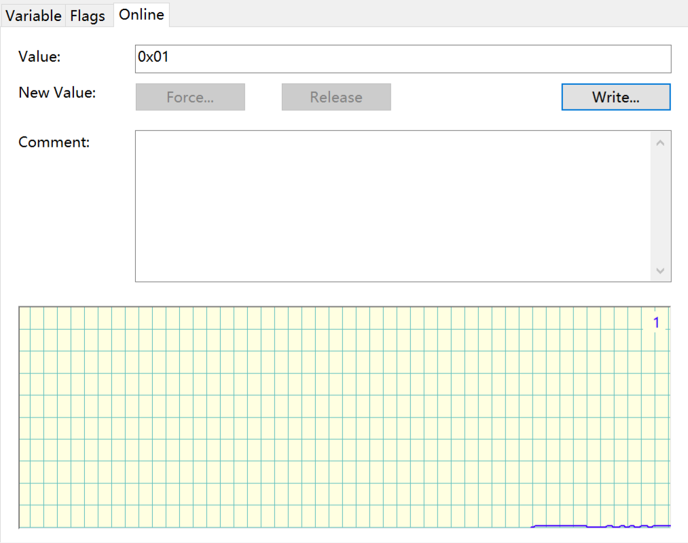
输出IO,右键Led State, 选择Online, 点击Write写入数值。 写入1开发板LED亮起，写入0开发板LED熄灭。

27.1.4. 运行现象
当工程正确运行后, 串口终端会输出如下信息, 输入输出IO状态与TwinCAT工程配置相对应：
This is Ethernet/IP blinky demo.
LwIP Version: 2.1.2
Enet phy init passed !
Link Status: Down
Link Status: Down
Link Status: Up
Link Speed: 100Mbps
Link Duplex: Full duplex
IPv4 Address: 192.168.100.10
IPv4 Netmask: 255.255.255.0
IPv4 Gateway: 192.168.100.1
Mesaage receieved from host!